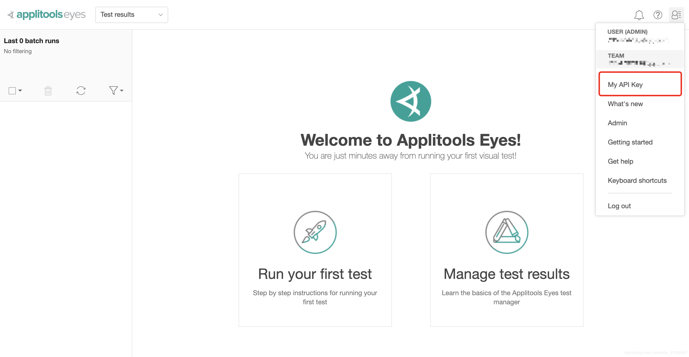

一：Appltools下载：
pip install eyes-selenium==3.16.2
二：
注册:Appltools账号：
https://applitools.com/sign-up
三、获取：API:
新建: .py文件
from selenium import webdriver
from applitools.selenium import Eyes
class HelloWorld:
global driver
eyes = Eyes()
# Initialize the eyes SDK and set your private API key.
eyes.api_key = 'lxxxxxxx'
try:
# Open a Chrome browser.
driver = webdriver.Chrome()
# Start the test and set the browser's viewport size to 800x600.
eyes.open(driver, "Hello World!", "My first Selenium Python test!", {'width': 800, 'height': 600})
# Navigate the browser to the "hello world!" web-site.
driver.get('https://applitools.com/helloworld')
# Visual checkpoint #1.
eyes.check_window('Hello!')
# Click the 'Click me!' button.
driver.find_element_by_css_selector('button').click()
# Visual checkpoint #2.
eyes.check_window('Click!')
# End the test.
eyes.close()
finally:
# Close the browser.
driver.quit()
# If the test was aborted before eyes.close was called, ends the test as aborted.
eyes.abort_if_not_closed()运行即可：
查看分运行后分析结果：
https://applitools.com/users/login
下面奉上Applitools官方网站：
https://applitools.com/tutorials/
Applitools更多sdk:
https://applitools.com/tutorial
Applitools文档：
https://applitools.com/docs
Applitools演示：
https://applitools.com/request-demo?utm_source=tutorials
Applitools知识库：
https://help.applitools.com/hc/en-us/